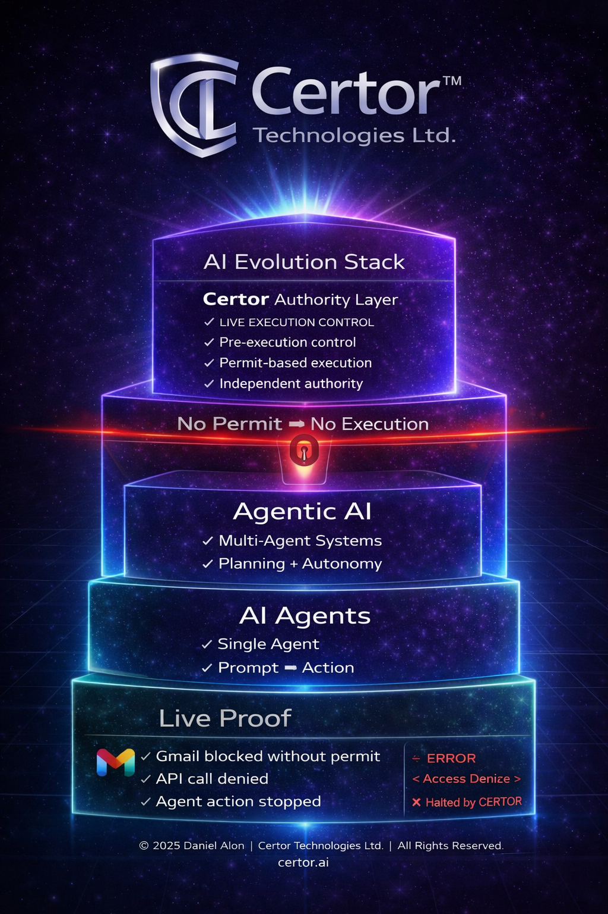

A structured research line for authorization in AI systems.
The Certor™ research line is organized as a progression from problem framing, to architectural specification, to execution-layer validation.

Research Structure
The current material can be read as three connected layers: concept, architecture, and validation.
Concept
Defines the authorization gap and introduces the principle of authority before execution.
Architecture
Specifies the structural placement of Certor as an authorization layer above execution.
Validation
Demonstrates MVP-level execution control through permit-based and decision-bound flow.
Foundational Concept
The foundational paper introduces the core problem: current AI systems generate and act, but do not contain an independent authorization layer before execution.
Open Concept PaperAuthority Before Execution
The primary paper defining the missing authorization boundary in AI systems and positioning Certor™ as a structural response.
Architecture Overview
A structural explanation of how Certor™ integrates above models, tools, and downstream execution pathways as a governing layer.
Architectural Framing
The architecture material expands the concept into a layered execution model, clarifying how authorization is separated from generation and applied at the action boundary.
Open ArchitectureExecution-Layer Validation
The MVP material focuses on validation: proving that authorization can be enforced in real time before execution proceeds.
Review MVPMVP Demonstration
The validation layer demonstrates permit-based execution control, visible action outcomes, and real-time authorization logic.
Reading Order
For first-time readers, the recommended order is: foundational concept, architecture overview, then MVP validation.